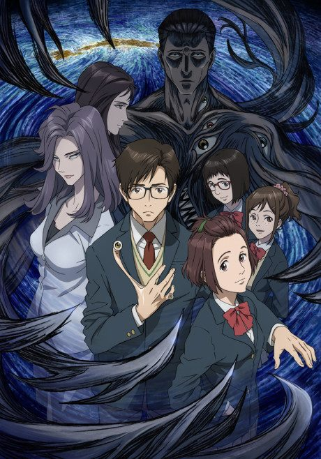
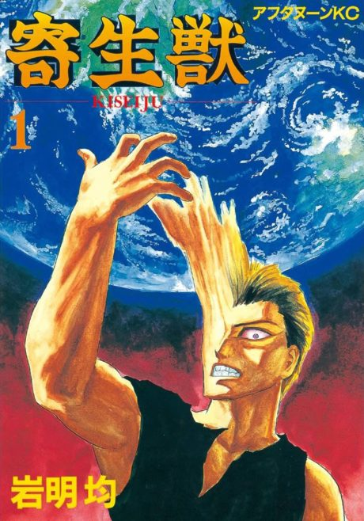

Parasyte -the maxim-
寄生獣 セイの格率
Shinichi, a high school student, has his right hand taken over by an alien parasite, and the two have to learn to live together.
The anime covers the whole manga.
8.1AniList score
—Animeter, no votes yet
24episodes
Rate it or report where you stopped
Key events
These are spoilers. They stay blurred until you reveal them, one at a time or all at once.
Migi Ep 1–2
- Shinichi wakes up to find a parasite living in his right hand.
- The parasite names itself Migi, and the two strike an uneasy partnership.
- News of 'mincemeat murders' reveals parasites are feeding on humans.
Ryoko Tamura Ep 3–4
- Ryoko Tamura, a parasite, becomes Shinichi's teacher and reveals she is pregnant.
- Another parasite, A, attacks Shinichi at school.
- Shinichi and Migi kill A.
Shinichi's Mother Ep 5–7
- A parasite takes over Shinichi's mother and stabs him through the heart.
- Migi saves Shinichi by repairing his heart, which also changes his body.
- Shinichi and fellow host Kazuyuki Uda defeat the parasite wearing his mother's body.
Shimada Ep 8–10
- Hideo Shimada arrives and Kana becomes drawn to Shinichi's strange aura.
- Yuko discovers Shimada's true nature.
- Shimada goes on a rampage at school, and Shinichi kills him with a thrown rock.
Kana Ep 11–12
- A parasite tests its strength against yakuza members.
- Kana is killed by a parasite before Shinichi can save her.
- Shinichi's cold rage disturbs even Migi.
The Detective and Ryoko's End Ep 13–18
- Detective Kuramori learns the truth about parasites and loses his family to them.
- Shinichi learns of Hirokawa's plans and meets Gotou, a body of five parasites.
- Ryoko dies protecting her human baby, leaving him to Shinichi.
- Shinichi cries for the first time since Migi changed him.
City Hall Raid Ep 19–21
- A special police team raids Hirokawa's city hall.
- Gotou slaughters the armed forces.
- Hirokawa turns out to be a human who sides with the parasites, and is shot dead.
Gotou Ep 22–23
- Migi sacrifices itself so Shinichi can escape Gotou.
- Shinichi hides with an old woman, Mitsuyo, in a rural town.
- Migi returns inside Gotou, and Shinichi kills Gotou with a toxic metal rod.
Epilogue Ep 24
- Migi goes dormant to live its own life inside Shinichi's hand.
- The human serial killer Uragami kidnaps Satomi, and Shinichi saves her.